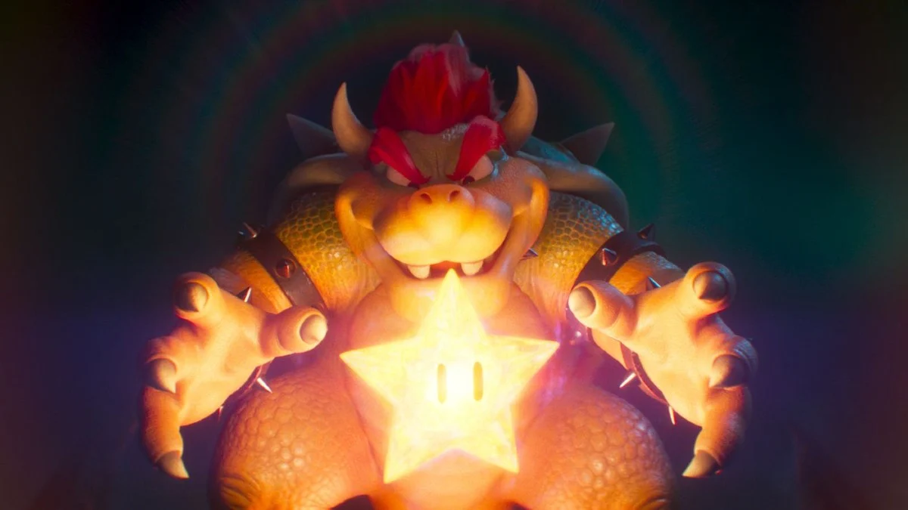

Bowser
Bowser es generalmente representado como un villano de una maldad pura, además de ser cruel y despiadado.
Una de sus mayores cualidades es su insaciable sed de poder y conquista. Bowser piensa de todo en términos de poder, y
siempre está buscando formas de extender su dominio sobre el mundo.